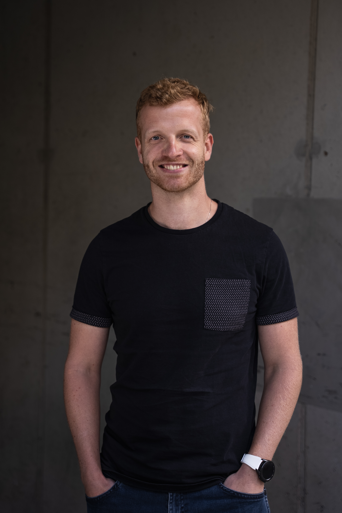
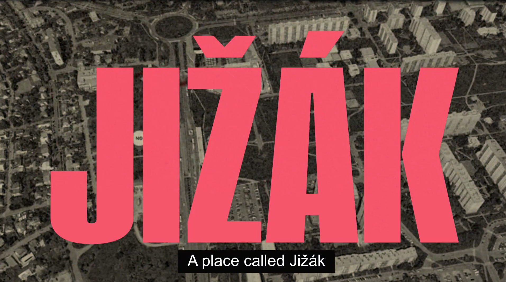
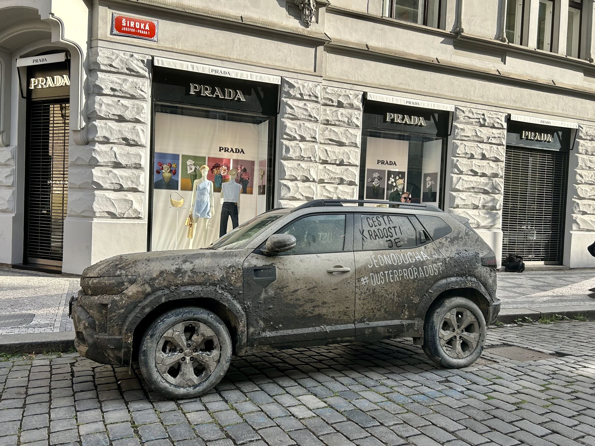
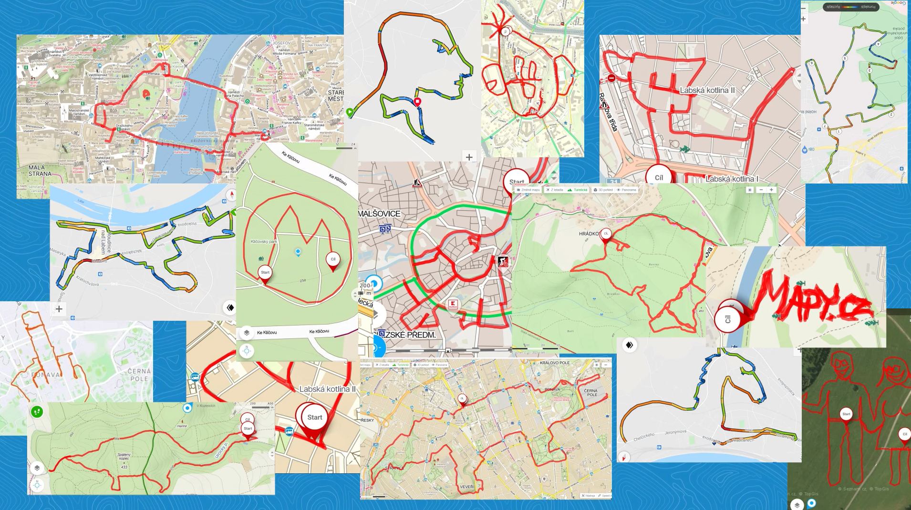
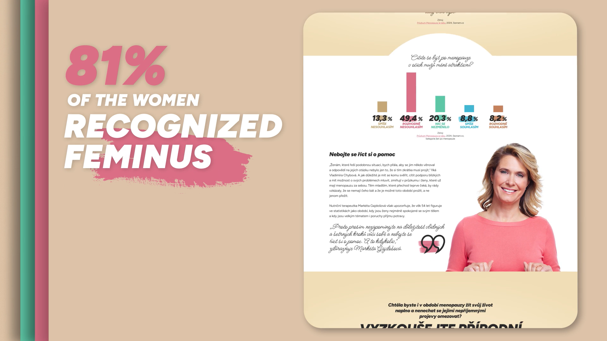
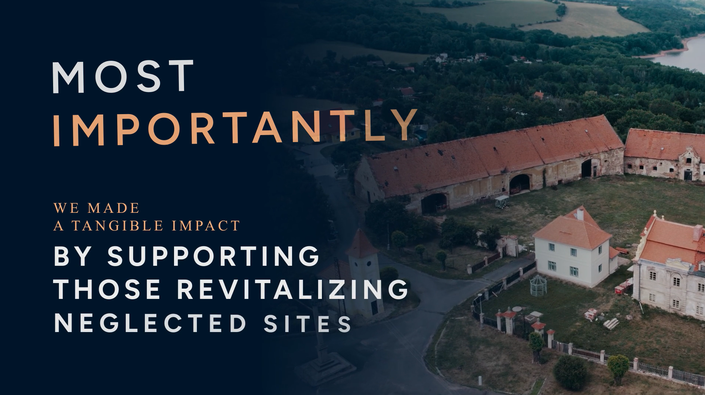

Efektivní marketingová komunikace
Pomůžu vám nastavit komunikační mix tak, abyste zbytečně neplýtvali prostředky a využívali ty komunikační kanály, které pro vaši značku a cíle dávají skutečně smysl. A vytěžili z nich maximum.

S čím vám pomůžu
Na začátku se hodně ptám. Díky tomu dokážu navrhnout řešení, které vám skutečně pomůže. Společně tak definujeme nový směr vaší značky, připravíme odvážnou kampaň nebo vylepšíme procesy.
Pomůžu vám nastavit komunikační mix tak, abyste zbytečně neplýtvali prostředky a využívali ty komunikační kanály, které pro vaši značku a cíle dávají skutečně smysl. A vytěžili z nich maximum.
Společně definujeme to klíčové: vizi a směr značky, její hodnoty, positioning, hlavní symboly i tone of voice. Aby to nezůstalo jen u prezentace, vytvořím i konkrétní plán komunikace.
Přijdu s nápady, které nezapadnou. Najdu témata a jejich zpracování, která budou vaši cílovku zajímat a vaší značce přinesou pozornost. Vytvořím komunikační linku pro 360 kampaň nebo dílčí kanály: sociální sítě, obsah na web, branded content, display, OOH nebo třeba event. A zajistím i realizaci.
Složím pro vás ten správný tým. Dokážu vybrat a koordinovat vhodné specialisty od produkce a grafiky přes výkonnostní reklamu až po spolupráci s mediálními domy. Připravím zadání, nastavím kritéria, posoudím nabídky a pomůžu vám s rozhodnutím u tendru.
Připravím zadání kvalitativního i kvantitativního výzkumu, najdu ve výsledcích to podstatné a vytvořím z nich praktické závěry pro strategii, kreativu nebo třeba produktový vývoj.
Pomůžu vám najít rozumné využití AI v interních procesech, efektivnější tvorbě obsahu nebo vytvořím jednoduchou landing page pro kampaň.
Kdo jsem
Rád věcem rozumím, proto se hodně ptám. Nejraději dělám věci, které zatím neumím. Ne kvůli chaosu, ale protože nové věci nutí přemýšlet pořádně. Hledám cesty, ne důvody, proč něco nejde.
Vyzkoušel jsem si práci v agenturách, mediálním domě i na straně značky. Díky tomu mám široký rozhled, dokážu vidět věci v kontextu a zároveň se zaměřit na detail.
„Hledám cesty, ne důvody, proč něco nejde.“
Ukázky práce




